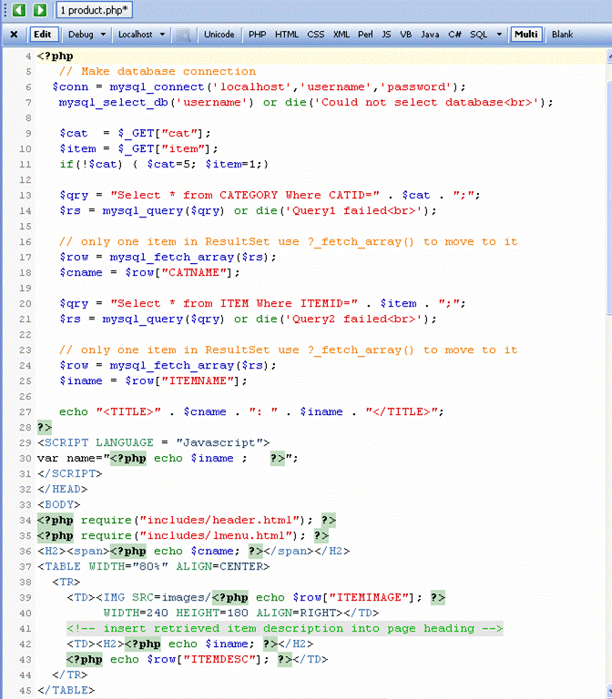
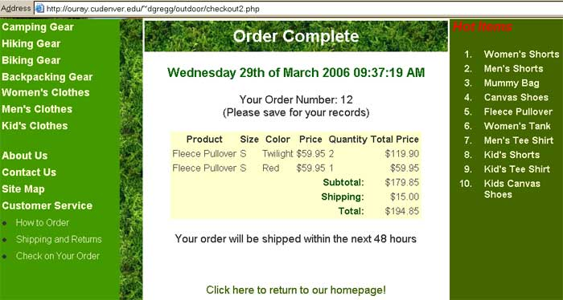

PHP & Databases
- For many people, the main reason for learning a scripting language like
PHP is because of the interaction with databases it can offer. PHP can connect
to a MYSQL database, MS Access, Oracle, PostgreSQL, MS SQL Server, and others.
- Why Would I Want A Database?
- Banner Rotation. On many sites that use banner rotation, a PHP
script is called that opens a database and picks a random banner from it to
show the visitor. These scripts can also count the number of times the banner has been
viewed and could track clicks too.
- Forums. Hundreds of forums (message boards) on the internet are
run using PHP and a database. These are much more efficient than other
systems that create a page for each message and offer a wide variety of
options. All the pages in the forum can be updated by changing one script.
- Websites. If you have a large website and you want to change
the design it can take a very long time to update and upload all the pages.
With PHP and a database your whole website could be just one or two PHP
scripts. These would access a database to get the information for the pages.
To update the website's design you would just have to change a very few
pages.
MySQL Database Management System
- The MySQL® database has become the world's most popular open source
database because of its consistent fast performance, high reliability and ease
of use. The MySQL Web site (http://www.mysql.com/)
provides the latest information about MySQL software.
- It's used in more than 8 million installations ranging from large
corporations to specialized embedded applications on every continent in the
world. (Yes, even Antarctica!)
- MySQL runs on more
than 20 platforms including Linux, Windows, OS/X, HP-UX, AIX, Netware.
- MySQL is a database management system.
- A database is a structured collection of data. It may be anything from
a simple shopping list to a picture gallery or the vast amounts of
information in a corporate network.
- To add, access, and process data stored in a computer database, you need a
database management system such as MySQL Server.
- MySQL is a relational database management system.
- A relational database stores data in separate tables rather than
putting all the data in one big storeroom. This adds speed and
flexibility.
- The SQL part of “MySQL” stands for
“Structured Query Language.” SQL is the most
common standardized language used to access databases and is defined by the
ANSI/ISO SQL Standard.
- MySQL software is Open Source.
- Open Source means that it is possible for anyone to use and modify the
software.
- Anybody can download the MySQL software from the Internet and use it
without paying anything.
- The MySQL Database Server is very fast, reliable, and easy to use.
- MySQL Server was originally developed to handle large databases much
faster than existing solutions and has been successfully used in highly
demanding production environments for several years. Its connectivity, speed, and security make MySQL Server highly
suited for accessing databases on the Internet.
- The following table lists some examples of approximate operating system
file-size limits:
| Operating System |
File-size Limit |
| Linux 2.2-Intel 32-bit |
2GB (LFS: 4GB) |
| Linux 2.4+ |
(using ext3 filesystem) 4TB |
| Solaris 9/10 |
16TB |
| NetWare w/NSS filesystem |
8TB |
| Win32 w/ FAT/FAT32 |
2GB/4GB |
| Win32 w/ NTFS |
2TB (possibly larger) |
| MacOS X w/ HFS+ |
2TB |
- MySQL Server works in client/server or embedded systems.
- The MySQL Database Software is a client/server system that consists of
a multi-threaded SQL server that supports different back-ends, several
different client programs and libraries, administrative tools, and a wide
range of application programming interfaces (APIs) including PHP, Java, Perl
and ASP.
Database Connection
-
To connect to a database using PHP, you need to create a connection that will work with your database
type.
-
You can connect to MySQL, Oracle, PostgreSQL, MS SQL Server, and others.
-
For example to connect to a MS Access Database you use an ODBC bridge which
will allow you to connect to any database that does not have a specific driver
built into PHP.
- ODBC, however, requires you establish an ODBC
connection to the database on every computer on which the application will
be run.
- To create an ODBC connection to an MS Access
database open the "ODBC Data Source" control panel in Setting - Control
Panel - Administrative Tools (on most Windows Machines).
- Once you have created the ODBC Data source name (e.g. 'myDatabase') you
would connect to the database and run a Select query as follows:
$conn = odbc_connect('myDatabase','',''));
$qry = "Select * from Item Where CATID=5;";
$rs = odbc_exec($conn, $qry);
-
THE PROBLEM: All PHP code to connect to a database, select data from
the database and display it in your files depends on the type of database you
are connecting to (that IS NOT the way it works in other languages) - so it is
hard to switch back and forth between databases.
- THE SOLUTION: We will be creating and using a
MySQL database - both at home and on Ouray (since you cannot use MS Access on
Ouray).
-
In the PHP Code you need to connect to MySQL on "localhost" using your
username and password. If you created a username and password on "The
Uniform Server" that is the same as the username and password you were
assigned on Ouray - then you can copy your website to Ouray without having to
change it (at all).
-
The connection string to connect to MySQL running on localhost is:
$conn = mysql_connect('localhost','username','password')
or die( '<h2>Could not connect to MySQL</h2></body></html>');
-
Once you have successfully connected to MySQL you need to select a specific
database running in MySQL. (Unlike MS Access which is has a single
database stored in a file - MySQL is a database server which allows the creation
of multiple different databases - each of which can contain many tables).
- If you have "Create Database" privileges on your system you can create and
manage many different databases using MySQL.
- On ouray - you cannot create a new database - you only have access to one
database with the same name as your ouray MySQL username.
-
The code below will try to select a MySQL database called 'username' if it does
not exist it will use a standard SQL query to create it:
$username = 'username';
if(!mysql_select_db($username))
{ echo ("Could not select database $username<br>");
$query = "CREATE DATABASE $username";
$result = mysql_query($query);
mysql_select_db($username) or die("Could not select database
$username<br>");
}
echo "Selected $username successfully<br>";
Reading and Writing to a Database using PHP
Select and Display Data
- The category 5.php page (below) is designed to
display all of the "Women's Clothing" products available for sale at the
Outdoor Depot store.

-
To add database connectivity to the file you need to add the connection
and database selection code discussed previously:
$conn = mysql_connect('localhost','username','password')
or die( '<h2>Could not connect to MySQL</h2></body></html>');
mysql_select_db('username') or die("<h2>Could not select database</h2></body></html>");
- To get data from the database you need to write a query to extract all the
data items for women's clothing from the ITEM Table:
$qry = "Select * from Item Where CATID=5;"
(Where 5 is the category for Women's Clothing)
-
You need to pass the query to the
mysql_query() function which returns a ResultSet containing all of the database records returned
by the query.
Retrieving Data from the RecordSet
- To retrieve all of the records in a PHP
ResultSet you need to
retrieve the array of results:
$row = mysql_fetch_array($rs)
- Then to reference and individual field within an HTML tag, you reference the field value using the
array name and the field name:
echo $row['fieldname']
- To display multiple records that are retrieved by query and stored
in a
ResultSet, you must use a while loop to loop through and
display the records until the end of the array:
while($row = mysql_fetch_array($rs))
{ //... }
- The following code creates a loop that displays the ITEMTHUMB
(thumbnail image) and the ITEMNAME fields from the MySQL
database. As in the sample page, the data is displayed in a table:
<table border=0 cellpadding=5 cellspacing=0 >
<?php
$conn = mysql_connect('localhost','username','password')
or die( '<h2>Could not connect to MySQL</h2></body></html>');
mysql_select_db('username') or die("<h2>Could not select database</h2></body></html>");
$qry = "Select * from Item Where CATID=5;"
$rs = mysql_query($qry);
// Loop through results set
while($row = mysql_fetch_array($rs))
{ // Send Specific Data values to Browser
?>
<tr>
<td width="80">
<img src=<?php echo "images/" . $row["ITEMTHUMB"];
?>
width="80"
height="80"></td>
<td><?php echo $row["ITEMNAME"];
?></td>
</tr>
<?php } // end of while loop
mysql_close($conn);
mysql_free_result($rs);
echo "</table>"; ?>
- Notice: That I have mixed HTML and PHP tags so that the PHP code is
being written inside of an image tag and inside of regular HTML table tags.
- The code also closes the
ResultSet and the database
connection which makes their resources available to other Web server
processes.
Passing URL Parameters to a PHP
Retrieving Input Parameters into a PHP
- PHP pages can be a mix of anything valid for any HTML page plus Java code
embedded inside of
<?php ?> tags. Thus you
can have JavaScript code in a PHP page. Since the JavaScript code would
not be inside <?php ?> tags, it will be
ignored by the PHP server and passed through to the client browsing the Web
page. It will be executed exactly like the JavaScript code embedded in a
regular HTML page.
- To retrieve the value of a variable that is passed as a URL parameter you
use the same $_GET array used to retrieve form
data.
$cat =$_GET["cat"];
$item=$_GET["item"];
$_GET is used because a URL parameter appears in the URL the page is called
with and thus is EXACTLY like a page called with a form that uses the GET
method.- Note: When you have a page that is called with URL parameters the
page relies on those parameters and often will not display correctly if it is
called without the parameters. To avoid error messages (and to make it easier
to test and debug the page) I often will set default values for the parameters
so the page will display:
$cat = $_GET["cat"];
$item = $_GET["item"];
if(!$cat) { $cat=5; $item=1;}
More Queries
- You are not limited to running a single query on a Web page. For the
product.php page to work correctly it requires 3 different queries.
- The query of the category table to get the category name
- A query on the item table to get the name of the product, its
description, and a
larger version of the product image to display.
- A query on the inventory table so we can update the table at the bottom of
the page to have the correct sizes & colors for all of the products & whether
or not they are in stock
- Notice that after I ran the second query I created a variable to hold the
ITEMNAME but just called $row["ITEMIMAGE"] and $row["ITEMDESC"]
directly in the location where the data should go. This is because I was
only using ITEMIMAGE and ITEMDESC one time so it was easier just to
remove the data from the $row array once. I used ITMENAME multiple times
so it was simpler to create a variable I could reuse.

- The final query for the product.php page is shown below. It
retrieves multiple inventory items from the inventory table and displays them
in a table at the bottom of the page.


- There are 3 remaining things to be done to complete this Web page:
- Note that in the code above all of the "IN STOCK" values are hardcoded
to "Yes." You can use if statements to determine if the quantity on
hand (QOH) is greater than 0 and dynamically determine Whether the value
should be YES or NO.
- The prices do not have a $ and are not fixed to 2 decimal places.
- Also notice that the last option button is always selected. This
is because the "checked" attribute is set for all of the radio buttons.
- The code below shows what the final code should look like.

Adding and Updating Database Data
- Anything you can do with a query you can do with PHP and MySQL. The
PHP below shows how you can insert Shopping Cart data into a MySQL database.
checkout2.php  Online Demo
Online Demo
<HTML>
<HEAD>
<TITLE>Outdoor Depot: Check-Out Complete</TITLE>
<link rel="stylesheet" type="text/css" href="od.css">
<script LANGUAGE="JavaScript" SRC="scripts/odcart.js"></script>
<script LANGUAGE="JavaScript" SRC="scripts/validate.js"></script>
</HEAD>
<BODY>
<?php require("includes/header.html"); ?>
<?php require("includes/lmenu.html"); ?>
<center>
<?php
echo "<H1>Order Complete</H1>";
echo "<h2>" . date("l dS \\o\f F Y h:i:s A") . "</h2></font>";
$conn = mysql_connect('localhost','username','password')
or die( '<h2>Could not connect to mysql</h2></body></html>');
mysql_select_db('username') or die('<h2>Could not select
database</h2></body></html>');
// The following code will write the order to the orders table
// and the order details to the order details table.
// First need to find the maximum order number and create a new order
number
// that is that number plus 1, I ordered them DESC so maximum is 1st
record
$qry = "SELECT MAX(Orders.OrderID) as max1 FROM Orders";
// Send the SQL statement to the database to be executed
$rs = mysql_query($qry) or die('Query1 failed: ' . mysql_error() . '<br>');
// only one item in ResultSet use ?_fetch_array() to move to it
$row = mysql_fetch_array($rs);
$oid = (int)$row["max1"];
// Calculate the new order id
$oid++;
//Create the SQL Statement to create a new order
$qry = "INSERT INTO Orders (OrderID, CName, ";
$qry = $qry . "Address, City, State, PostalCode, Country, Phone, Email,";
$qry = $qry . "PaymentMethod, PaymentNumber, ExpDate, OrderDate, Ship,
Total)";
$qry = $qry . " Values(" . $oid . ",";
$qry = $qry . "'" . $_REQUEST["CName"] . "',";
$qry = $qry . "'" . $_REQUEST["Address"] . "',";
$qry = $qry . "'" . $_REQUEST["City"] . "',";
$qry = $qry . "'" . $_REQUEST["State"] . "',";
$qry = $qry . "'" . $_REQUEST["Postcode"] . "',";
$qry = $qry . "'" . $_REQUEST["Country"] . "',";
$qry = $qry . "'" . $_REQUEST["Phone"] . "',";
$qry = $qry . "'" . $_REQUEST["Email"] . "',";
$qry = $qry . "'" . $_REQUEST["CreditCard"] . "',";
$qry = $qry . "'" . $_REQUEST["CCN"] . "',";
$qry = $qry . "'" . $_REQUEST["CCExpMM"] . "/" . $_REQUEST["CCExpYY"] .
"',";
$qry = $qry . date('YmdHis') . ",";
$qry = $qry . $_REQUEST["ship"] . ",";
$qry = $qry . $_REQUEST["total"] . ");";
//Send the SQL statement to the database to be executed
mysql_query($qry) or die('Query2 failed: ' . mysql_error() . '<br>');
// Next I need to write each item to the OrderDetails table.
// Since my cookie stuff is in JavaScript and I am at the server
// I am going to get my data from the form. I had a
// a hidden element "numprod" telling me how may products
// I have in my table.
// Loop through cart and add each item to the OrderDetails Table
for($i = 0 ; $i < $_REQUEST["numprod"]; $i++)
{
$qry = "INSERT INTO OrderDetails ";
$qry = $qry . "(OrderID, Product, ItemSize, Color, Price,
Quantity)";
$qry = $qry . " Values(" . $oid . ",";
$qry = $qry . "'" . $_REQUEST["field0$i"] . "',";
$qry = $qry . "'" . $_REQUEST["field1$i"] . "',";
$qry = $qry . "'" . $_REQUEST["field2$i"] . "',";
$qry = $qry . (int)$_REQUEST["field3$i"] . ",";
$qry = $qry . (float)$_REQUEST["field4$i"] . ");";
mysql_query($qry) or die("Query3 $i failed: " . mysql_error()
. "<br>");
echo "<p>Your Order Number: $oid <br>(Please save for your
records)</p>";
}
?>
<SCRIPT Language = "JavaScript">
<!--
var head = '<table class="bg1" style="font-size: .917em;"
cellpadding=2>' +
'<tr class="bg2"><th>Product</th><th>Size</th><th>Color</th>' +
'<th>Price</th><th>Quantity</th><th>Total Price</th></tr>';
writeCart('odCart', 2, 'cartform', '|', 5, head, 'checkout.html' );
// End -->
</SCRIPT>
<center>
<p>Your order will be shipped within the next 48 hours</p>
<br><br><a href='index.php'>Click here to return to our homepage!</a>
</center>
<?php
// now we will close the connection to the database
mysql_close($conn);
mysql_free_result($rs);
?>
<hr>
<?php require("includes/rmenu.html"); ?>
<?php require("includes/footer.html"); ?>
</body>
</html>
- Notice how I set the TIMESTAMP for the orders table. Even though
date('YmdHis') returns a string it is not enclosed in quotes when
it is passed in the query.
